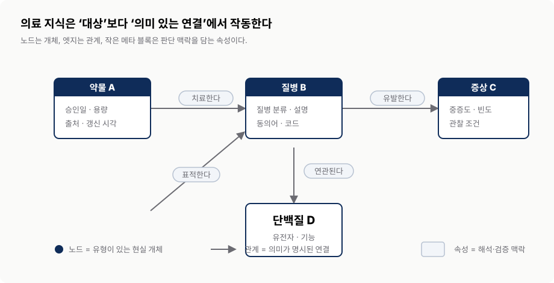
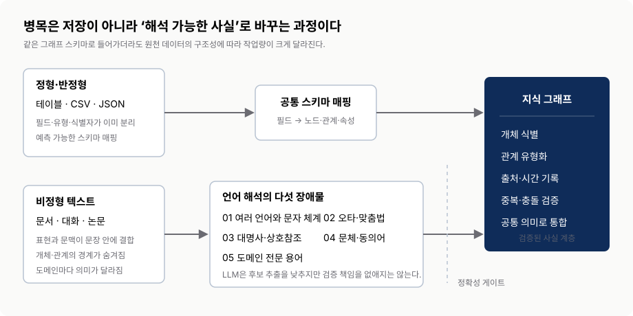
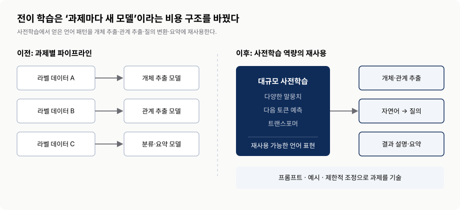
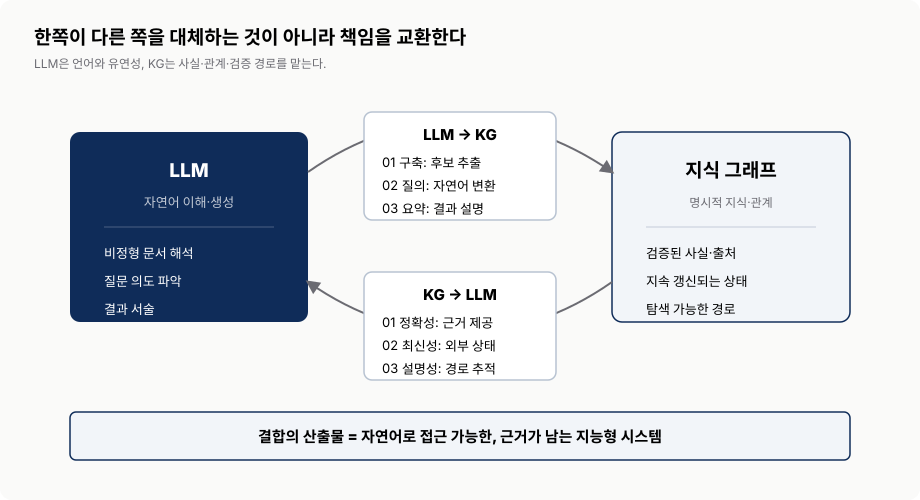
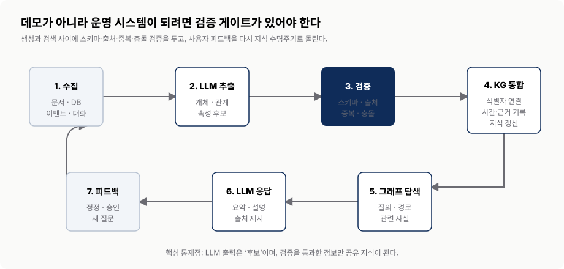
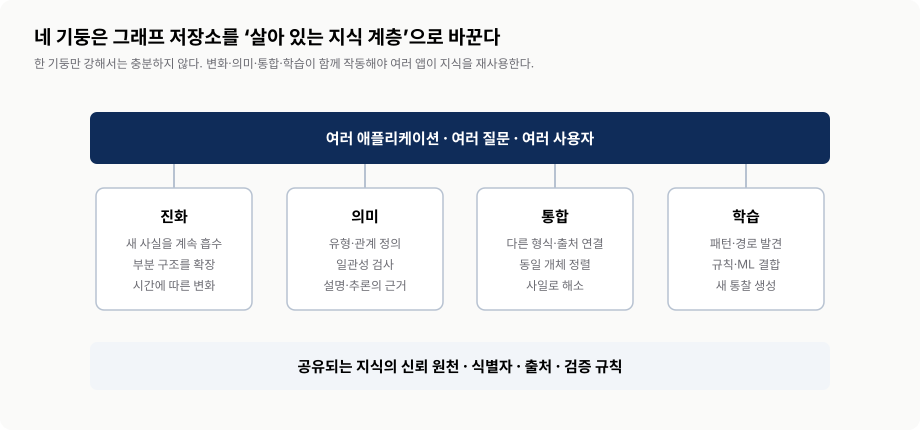
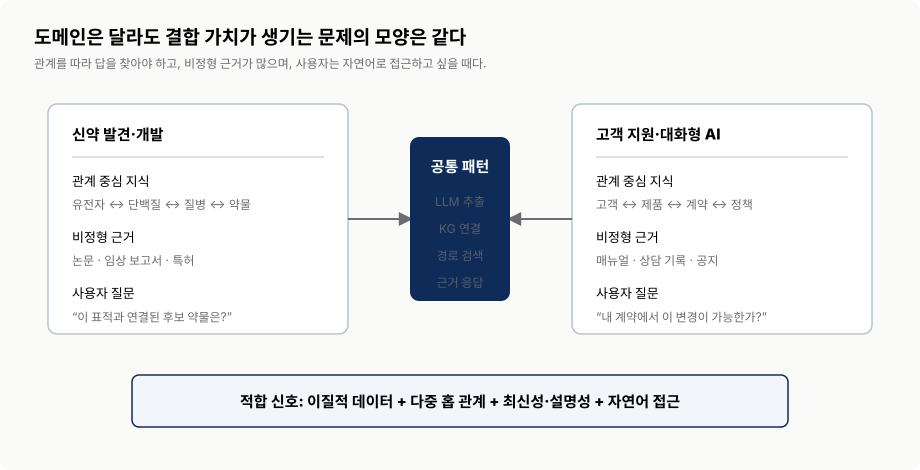
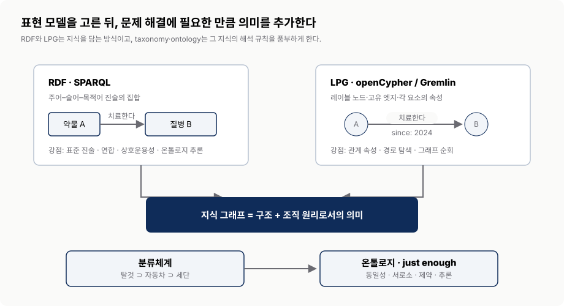

지식 그래프와 LLM:
강력한 조합
서로의 약점을 메워 신뢰할 수 있는 하이브리드 지능을 만드는 법
0. 핵심 요약
이 장은 특정 그래프 제품이나 RAG 구현법을 선택하는 장이 아니다. 왜 지식 그래프와 LLM이 함께 필요한지, 각 기술이 상대의 어떤 약점을 보완하는지, 그리고 어떤 문제에서 결합 비용을 감수할 가치가 있는지를 설명하는 개념 지도다. 출발점은 단순하다. 지식 그래프는 정확한 연결을 잘 다루지만 만들고 질의하기 어렵고, LLM은 언어를 유연하게 다루지만 사실의 정확성·최신성·근거를 스스로 보장하지 못한다.
- 무엇을 맡기는가 — LLM에는 언어 이해·추출·질의 변환·설명을, KG에는 식별·관계·출처·검증을 맡긴다.
- 어디서 통제하는가 — LLM의 추출 결과를 곧바로 사실로 저장하지 않고 스키마와 출처 검증을 거친다.
- 언제 결합하는가 — 데이터가 이질적이고 관계를 여러 홉 따라가야 하며 최신성·설명 가능성이 중요할 때다.
- 무엇을 선택하는가 — RDF/LPG는 표현 선택지이고, taxonomy/ontology는 필요한 의미를 더하는 계층이다.
0.1 장의 전체 논리
| 단계 | 핵심 질문 | 장의 주장 | 실무에서 남는 판단 |
|---|---|---|---|
| KG | 왜 좋은 기술이 널리 쓰이기 어려웠나? | 구축·접근·결과 해석의 비용이 높았다. | 그래프 저장소보다 지식 수명주기를 먼저 설계한다. |
| LLM | 무엇이 자연어 장벽을 낮췄나? | 전이 학습이 언어 과제를 범용 모델에 재사용하게 했다. | 추출과 인터페이스에 쓰되 사실 판정은 분리한다. |
| 결합 | 둘은 어떻게 서로를 보완하나? | LLM은 KG 구축·질의·요약을, KG는 정확성·최신성·설명성을 강화한다. | 검증 게이트가 있는 양방향 루프로 운영한다. |
| 기술 | 어떤 그래프와 의미 모델을 쓰나? | RDF와 LPG는 상호 배타적 정답이 아니며 필요한 의미만 단계적으로 넣는다. | 질의·통합·추론 요구에서 선택을 시작한다. |
1. 지식 그래프: 연결을 지식으로 만드는 구조
- 노드는 현실의 개체, 관계는 연결의 의미, 속성은 판단 맥락을 표현한다.
- KG의 채택 장벽은 데이터베이스 기술 하나가 아니라 구축·접근·전달 전체의 비용이다.
- 비정형 텍스트에서는 개체와 관계가 문맥 안에 숨어 있으므로 LLM이 후보 추출 비용을 크게 낮춘다.
1.1 노드·관계·속성
지식 그래프는 현실 세계의 대상을 유형이 있는 개체로 식별하고, 개체 사이의 연결을 의미가 드러나는 관계로 기록한다. 사람, 장소, 조직, 질병, 단백질, 약물은 노드가 될 수 있다. “치료한다”, “유발한다”, “암호화한다”는 관계가 된다. 승인일, 용량, 지리 좌표, 설명, 출처, 신뢰도와 같은 속성은 그 사실이 언제·어떤 조건에서 유효한지 알려준다.
핵심은 데이터가 선으로 연결됐다는 데 있지 않다. 연결의 뜻과 개체의 유형이 명시돼 있다는 것이 중요하다. 그래야 기계가 관계 경로를 탐색하고, 규칙을 적용하고, 결과가 어떤 사실에서 나왔는지 설명할 수 있다. 그래프는 구조이고, 지식 그래프는 구조에 도메인 의미와 검증 가능한 맥락을 더한 것이다.

교재 그림 1.1의 개념을 발표용으로 재구성. 실제 의료 지식 그래프가 아니라 구성요소와 읽는 법을 설명하기 위한 예시다.| 요소 | 역할 | 예시 | 검증할 질문 |
|---|---|---|---|
| 노드 | 구분 가능한 현실 개체를 식별 | 약물 A, 질병 B, 환자 C | 동일 개체의 중복·동의어를 어떻게 합칠 것인가? |
| 관계 | 두 개체의 의미 있는 연결을 명시 | 약물이 질병을 치료한다 | 방향·유형·유효 기간이 올바른가? |
| 속성 | 개체와 관계를 해석하는 맥락 제공 | 승인일, 용량, 출처, 신뢰도 | 값의 단위·출처·갱신 시각이 남는가? |
| 스키마·의미 | 허용되는 유형과 관계의 규칙 정의 | 약물만 질병을 치료할 수 있음 | 모순과 잘못된 연결을 기계적으로 찾을 수 있는가? |
1.2 널리 쓰기 어려웠던 세 가지 비용
첫째, 구축 비용. 여러 원천에서 개체와 관계를 찾아 공통 스키마로 맞추고, 중복을 통합하며, 시간이 지나 바뀐 사실을 갱신해야 한다. 둘째, 접근 비용. 여러 홉을 건너 답을 찾으려면 그래프 구조와 전용 질의 언어를 알아야 한다. 셋째, 전달 비용. 답이 여러 노드와 관계에 흩어져 있기 때문에 비전문가가 읽을 설명으로 다시 합쳐야 한다.
정형 데이터는 필드와 유형이 이미 분리돼 있어 공통 그래프 스키마로 매핑하는 과정이 비교적 통제 가능하다. 비정형 데이터는 다르다. 언어와 문자 체계, 오타, 대명사와 상호참조, 저자별 문체, 도메인 전문 용어가 개체와 관계의 경계를 숨긴다. 이 지점에서 LLM은 완성된 사실을 생산하는 도구라기보다 후보 개체·관계·속성을 빠르게 제안하는 해석 계층으로 가치가 있다.

교재 §1.1의 정형·비정형 데이터 논의를 재구성. 오른쪽 검증 게이트는 발표자가 실무 관점에서 보강한 통제 지점이다.좋은 지식 그래프를 만드는 것과 사용 가능한 애플리케이션을 만드는 것은 다른 일이다. 자연어 질문을 적절한 그래프 질의로 바꾸고, 결과를 근거와 함께 설명해야 지식이 실제 사용자에게 도달한다.
2. LLM: 자연어라는 접근 장벽을 낮추다
- 전이 학습은 과제마다 모델을 새로 만드는 방식을 범용 언어 모델의 재사용으로 바꿨다.
- 규모·데이터·학습 목표가 일반화 능력을 만들지만, 그것이 사실 보증을 의미하지는 않는다.
- KG 맥락에서 LLM의 강점은 비정형 해석과 자연어 인터페이스, 약점은 정확성·최신성·추적성이다.
2.1 전이 학습이 바꾼 비용 구조
전이 학습은 일반적인 과제에서 배운 언어 패턴을 특정 과제에 재사용하는 능력이다. 이전에는 개체 추출, 관계 추출, 분류, 요약마다 대량의 라벨 데이터를 모으고 작은 전용 모델을 각각 개발했다. 사전학습 언어 모델은 대규모 말뭉치에서 얻은 표현을 프롬프트·예시·제한적 조정으로 여러 과제에 재사용한다. KG 구축에서는 도메인마다 완전히 다른 추출기를 만드는 비용을 낮추고, KG 이용에서는 자연어 질문과 그래프 질의 사이의 인터페이스가 된다.

교재 그림 1.2와 §1.2를 재구성. 이 그림의 초점은 모델 계보가 아니라 과제 수행 비용의 변화다.2.2 왜 범용성이 나타났나
이 장은 LLM의 성능 향상을 세 요소로 설명한다. 모델 복잡도는 더 많은 패턴을 표현할 용량을 제공하고, 학습 말뭉치의 규모와 품질은 더 넓은 언어·도메인 경험을 제공하며, 다음 토큰 예측은 다양한 텍스트에 공통으로 적용되는 학습 목표를 제공한다. 토큰화는 텍스트를 모델이 처리할 단위로 바꾸고, 트랜스포머는 먼 문맥의 관계를 학습할 기반이 된다.
그러나 문장을 잘 이어 쓰는 능력과 도메인 사실을 보증하는 능력은 같지 않다. 모델이 배운 지식은 학습 시점에 고정되고, 답의 생성 경로는 사람이 확인할 사실 관계와 일치하지 않을 수 있다. 그래서 하이브리드 시스템은 모델 규모를 신뢰성의 대체물로 취급하지 않는다.
| LLM이 잘하는 일 | LLM만으로 불안한 일 | 시스템 경계 |
|---|---|---|
| 문서에서 개체·관계 후보 찾기 | 후보의 사실 여부와 중복 식별 | 스키마·출처·개체 정렬 검증 |
| 질문의 의도와 표현 차이 이해 | 항상 올바르고 안전한 질의 생성 | 허용 질의·권한·결과 크기 통제 |
| 여러 결과를 읽기 쉬운 문장으로 요약 | 근거에 없는 내용을 섞지 않는 보증 | 검색 결과 범위와 인용 경로 고정 |
| 여러 언어·문체에 유연하게 대응 | 최신 정책·계약·상태 자체의 보유 | 외부 지식 원천을 질의 시점에 연결 |
3. 함께일 때 더 강하다: 양방향 보완
3.1 LLM이 지식 그래프에 제공하는 세 역할
- 구축 — 문서에서 개체, 관계, 속성 후보를 찾고 서로 다른 표현을 정규화한다. 사람이 모든 문장을 규칙으로 코딩하는 비용을 줄인다.
- 질의 — 자연어 질문을 SPARQL·Cypher 같은 그래프 질의로 바꾸고, 사용자의 후속 질문에서 맥락을 유지한다. 그래프 스키마를 모르는 사용자도 복잡한 지식에 접근할 수 있다.
- 요약 — 여러 홉의 결과를 그대로 나열하지 않고 질문의 맥락에 맞는 설명으로 합친다. 단, 서술 범위는 검색 결과와 근거에 묶여야 한다.
3.2 지식 그래프가 LLM에 제공하는 세 역할
- 정확성 — 검증된 도메인 사실과 허용된 관계를 제공해 그럴듯한 오류의 여지를 줄인다.
- 최신성 — 모델 재학습 없이도 질의 시점의 고객 상태, 정책, 계약, 연구 결과처럼 계속 바뀌는 정보를 제공한다.
- 설명 가능성 — 어떤 노드와 관계, 어떤 출처를 따라 답을 만들었는지 경로를 남겨 사람이 검토하고 정정할 수 있게 한다.

교재 그림 1.5의 핵심 논지를 재구성. 화살표는 단순 검색 한 번이 아니라 구축과 이용의 양방향 수명주기를 뜻한다.3.3 운영 가능한 하이브리드 루프
개념적 결합과 운영 가능한 시스템 사이에는 검증 단계가 있다. 문서가 들어오면 LLM은 개체·관계 후보를 추출한다. 그 결과는 스키마, 출처, 중복, 충돌 규칙을 통과한 뒤 KG에 통합된다. 질문이 들어오면 LLM은 의도를 구조화하고 허용된 그래프 질의를 만든다. KG에서 찾은 사실과 관계 경로가 다시 LLM의 입력이 되고, LLM은 그 범위 안에서 답을 작성한다. 사용자의 정정과 새 질문은 다시 지식 갱신으로 돌아간다.

교재 §1.3을 운영 관점으로 확장한 발표자 설계. 생성 결과를 사실로 승격하는 지점과 사용자 답변을 생성하는 지점을 분리한다.| 지점 | 실패 모드 | 최소 통제 | 남겨야 할 증거 |
|---|---|---|---|
| 추출 → KG | 잘못된 개체·관계를 사실로 저장 | 스키마 검증, 엔터티 정렬, 신뢰 임계값, 사람 승인 | 원문 위치, 추출 모델·프롬프트, 승인자 |
| 질문 → 그래프 질의 | 과도한 조회, 잘못된 경로, 권한 우회 | 허용 스키마, 읽기 전용, 비용·시간 제한 | 생성 질의, 실행 계획, 권한 컨텍스트 |
| 검색 → 응답 | 근거에 없는 설명을 추가 | 근거 컨텍스트 고정, 출처 표시, 모르면 중단 | 사용한 노드·관계·문서와 최종 답 |
| 피드백 → 갱신 | 사용자 정정이 새 오류가 됨 | 제안과 승인 분리, 변경 이력, 롤백 | 변경 전후 사실과 승인 기록 |
4. 패러다임 전환: 앱마다 지식을 복제하지 않는다
- 전통적 앱은 목적별 데이터베이스와 로직을 반복해서 만들기 쉽다.
- KG는 여러 애플리케이션이 공유하는 개체·관계·출처·의미 계층을 지향한다.
- 진화·의미·통합·학습 네 기둥이 함께 있어야 살아 있는 지식 원천이 된다.
전통적인 데이터 애플리케이션은 특정 목적에 맞는 동질적 데이터베이스와 로직을 만든다. 요구가 안정적이고 범위가 좁을 때는 효율적이지만, 고객 특성에 따라 달라지는 질문과 이질적 데이터가 섞이는 복잡한 도메인에서는 같은 사실과 변환 로직이 애플리케이션마다 반복된다. 지식 그래프는 관계를 일급 요소로 만들고, 검색·추천·분석·대화형 인터페이스가 같은 개체 식별자와 의미를 재사용하게 한다.
여기서 단일 신뢰 원천은 모든 원본 데이터를 한 데이터베이스에 복사한다는 뜻이 아니다. 같은 대상을 가리키는 식별자, 관계의 뜻, 출처와 검증 규칙을 공유하고, 필요한 경우 원천 시스템으로 추적할 수 있다는 뜻에 가깝다. 지능적 행동의 근거를 앱별 코드에 흩어 놓지 않고 공통 지식 계층에 한 번 표현하는 것이 장이 말하는 전환이다.
4.1 지식 그래프의 네 기둥

교재 그림 1.6과 §1.4.1을 재구성. 네 요소는 독립 기능 목록이 아니라 서로 의존하는 품질 조건이다.| 기둥 | 장의 의미 | 운영 질문 | 없을 때의 증상 |
|---|---|---|---|
| 진화 | 새 사실과 관계를 지속적으로 흡수 | 증분 갱신과 변경 이력이 가능한가? | 그래프가 곧 낡고 재구축 프로젝트가 됨 |
| 의미 | 개체 유형과 관계 규칙을 명시 | 모순·동일성·허용 관계를 검사할 수 있는가? | 연결은 많지만 해석이 사람마다 달라짐 |
| 통합 | 서로 다른 출처를 도메인 의미로 연결 | 동일 개체와 출처 충돌을 어떻게 다루는가? | 사일로가 그래프 안에서 그대로 복제됨 |
| 학습 | 경로·규칙·ML로 새 통찰을 도출 | 추론 결과와 관측 사실을 구분하는가? | 비싼 연결 저장소에 머무름 |
5. 적용 사례: 관계와 대화가 모두 중요할 때
이 장은 신약 발견과 고객 지원이라는 전혀 다른 도메인을 든다. 두 사례의 공통점은 데이터가 여러 원천에 흩어져 있고, 단일 레코드가 아니라 관계 경로를 따라야 답을 찾을 수 있으며, 중요한 근거가 비정형 문서에 있고, 사용자는 자연어로 질문하고 싶어 한다는 점이다.
5.1 신약 발견과 개발
신약 분야에서는 유전자, 단백질, 질병, 약물, 화합물, 임상 결과가 복잡한 네트워크를 이룬다. KG는 이 개체와 상호작용을 공통 구조로 통합하고, 생물학적 관계를 여러 홉 탐색하게 한다. LLM은 논문·특허·임상 보고서에서 새 개체와 관계 후보를 찾고, 연구자의 질문을 그래프 질의로 바꾸며, 결과를 연구 맥락에 맞게 요약한다. 이때 문헌에서 추출한 주장은 검증 상태와 출처를 함께 가져야 가설과 확정 사실이 섞이지 않는다.
5.2 고객 지원을 위한 대화형 AI
범용 언어 모델은 자연스러운 답을 만들지만 특정 고객의 계약, 제품 상태, 최신 정책을 자동으로 알지 못한다. KG는 고객–제품–계약–정책–해결 절차를 연결하고, LLM은 질문 의도를 해석해 관련 경로를 찾고 대화 흐름에 맞는 답을 작성한다. 유용한 대화는 단순한 문장 유창성이 아니라 사용자 맥락과 검증된 지식에 기반한 다음 행동에서 나온다.

교재 §1.5.1–1.5.2를 문제 구조 중심으로 재구성. 실제 도입에서는 개인정보·의료 안전·권한 통제가 별도 요구사항이다.| 사례 | KG 책임 | LLM 책임 | 특히 경계할 실패 |
|---|---|---|---|
| 신약 발견 | 생물학적 개체·상호작용·출처·검증 상태 | 문헌 추출, 질문 해석, 연구 결과 요약 | 가설을 확정 사실처럼 저장하거나 설명 |
| 고객 지원 | 고객·계약·제품·정책·해결 절차와 권한 | 의도 파악, 후속 질문, 개인화된 응답 | 다른 고객 정보 노출, 만료 정책 사용, 무권한 실행 |
“LLM을 어디에 붙일까?”보다 “어떤 관계를 따라야 답이 나오며, 그 사실은 누가 검증하고, 사용자에게 어떤 근거를 보여줘야 하는가?”를 먼저 묻는다.
6. 기술 선택: RDF와 LPG, 그리고 필요한 만큼의 의미
- RDF는 표준 진술·상호운용·연합·온톨로지 추론에 강하다.
- LPG는 속성이 풍부한 노드·엣지와 경로 탐색·그래프 순회에 강하다.
- 분류체계와 온톨로지는 그래프에 조직 원리를 더하되, 완전성보다 현재 문제에 필요한 의미부터 시작한다.
6.1 RDF와 LPG는 표현 패러다임이다
RDF는 지식을 주어–술어–목적어 트리플의 집합으로 표현하며 SPARQL로 질의한다. 표준화된 진술을 통해 데이터셋을 연결하고, 전역 술어와 온톨로지를 이용해 시스템 사이의 의미적 일관성을 높이는 데 강점이 있다. LPG는 레이블이 있는 노드와 엣지, 그리고 각 요소의 속성을 중심으로 표현하며 openCypher나 Gremlin 같은 질의 언어를 사용한다. 엣지가 고유한 정체성과 속성을 가질 수 있어 관계 자체의 시간·출처·가중치와 경로 탐색을 자연스럽게 모델링한다.
둘은 경쟁 제품 목록이 아니다. 웹 규모 상호운용성과 표준 의미 추론이 핵심이면 RDF가 자연스럽고, 애플리케이션 중심의 경로 탐색과 관계 속성이 핵심이면 LPG가 자연스럽다. 조직은 한 시스템 안에서도 공개·연합 지식은 RDF로, 고성능 운영 그래프는 LPG로 다루는 등 보완적으로 사용할 수 있다.
| 관점 | RDF | LPG | 선택 질문 |
|---|---|---|---|
| 기본 단위 | 주어–술어–목적어 진술 | 레이블 노드·고유 엣지·속성 | 사실 교환인가, 경로 중심 운영인가? |
| 관계 모델 | 지식 베이스 전체에서 재사용하는 전역 술어 | 각 엣지가 정체성과 속성을 가짐 | 관계마다 시간·출처·상태가 필요한가? |
| 대표 강점 | 표준, 연합, 상호운용, 의미 추론 | 순회, 경로 탐색, 속성 기반 분석 | 외부 데이터 연결과 내부 질의 중 무엇이 중심인가? |
| 대표 질의 | SPARQL | openCypher, Gremlin | 팀의 질의·운영 역량은 어디에 있는가? |
6.2 Taxonomy와 Ontology
분류체계(taxonomy)는 “탈것 ⊃ 자동차 ⊃ 세단”처럼 범주를 넓음–좁음의 계층으로 조직한다. 온톨로지(ontology)는 계층을 넘어 동일성, 차이, 역관계, 서로소, 합집합, 개수 제약과 같은 규칙으로 도메인의 개념 구조를 표현한다. “자동차”와 “승용차”가 같은 개념인지, “자동차”와 “자전거”가 동시에 될 수 없는지를 명시하면 데이터 일관성 검사와 추론이 가능해진다.
전통적인 접근은 도메인을 완전하게 정의하려다 경직되고 유지하기 어려워질 수 있다. 이 장이 강조하는 just enough semantics는 현재 답해야 하는 질문과 검증해야 하는 오류에 필요한 규칙부터 넣고, 실제 요구가 늘어날 때 부분 온톨로지를 유기적으로 확장하는 태도다. 완벽한 세계 모델을 먼저 만드는 것이 아니라 실용적인 의미 최소 집합을 운영하면서 진화시킨다.

교재 §1.6–1.6.1을 재구성. RDF/LPG 선택과 의미 모델링 수준은 별개의 설계 축이다.7. 도입 판단: 기술 이름보다 문제의 모양을 본다
모든 데이터 애플리케이션에 KG와 LLM을 함께 넣을 필요는 없다. 단일 테이블 조회와 고정된 규칙으로 충분한 문제라면 그래프와 생성 모델은 불필요한 복잡도가 될 수 있다. 반대로 관계가 답의 핵심이고, 여러 데이터 원천을 통합해야 하며, 자연어 접근과 근거 설명이 동시에 필요하면 결합 가치가 커진다.
| 질문 | 예라면 | 아니라면 | 추가로 정할 것 |
|---|---|---|---|
| 답을 찾는 데 여러 개체의 관계 경로가 중요한가? | KG 후보 | 검색 인덱스·관계형 DB 우선 검토 | 핵심 노드·관계와 대표 질의 |
| 정형·비정형 데이터가 여러 시스템에 흩어져 있는가? | KG 통합 + LLM 추출 후보 | 기존 ETL·검색으로 충분할 수 있음 | 원천별 권위와 충돌 정책 |
| 사용자가 자연어로 복잡한 질문을 던지는가? | LLM 질의 인터페이스 후보 | 고정 UI·저장 질의 우선 | 허용 질의와 실패 응답 |
| 최신성·정확성·설명 가능성이 중요한가? | 외부 지식 원천과 경로 기록 필수 | 단순 생성만으로 충분할 수 있음 | 출처·갱신 SLA·인용 형식 |
| 지식을 지속 갱신하고 여러 앱이 재사용하는가? | 공유 지식 계층의 가치가 큼 | 회차성 분석·문서 RAG 우선 | 소유자·승인·버전·롤백 |
7.1 최소 시작점
- 질문부터 고른다. 대표 질문 3–5개와 기대하는 근거 경로를 먼저 적는다.
- 작은 스키마를 만든다. 핵심 개체·관계·출처 속성만 포함하고, 현재 질문에 필요 없는 온톨로지는 미룬다.
- LLM 출력을 후보로 취급한다. 샘플 문서에서 추출 정확도와 오류 유형을 측정하고 승인 지점을 정한다.
- 응답과 근거를 함께 검증한다. 답이 맞는지만 보지 않고 사용한 경로·출처와 권한을 확인한다.
- 갱신 책임을 정한다. 모델보다 먼저 지식 소유자, 충돌 해결, 변경 이력, 롤백 절차를 정한다.
8. 정리와 토론 질문
8.1 이 장에서 가져갈 여덟 문장
- 지식 그래프는 유형이 있는 개체, 의미 있는 관계, 속성과 출처를 연결하는 진화형 지식 구조다.
- 그래프를 어렵게 만든 병목은 저장보다 비정형 지식의 추출·검증과 복잡한 질의의 접근성이었다.
- 전이 학습은 여러 자연어 과제를 하나의 큰 모델에서 재사용할 수 있게 해 그 장벽을 낮췄다.
- LLM은 KG를 구축·질의·요약하기 쉽게 하지만, 그 출력이 자동으로 사실이 되는 것은 아니다.
- KG는 LLM에 정확성·최신성·설명 가능성을 제공하지만, 그래프 자체의 품질과 갱신이 전제다.
- 결합 가치는 이질적 데이터, 다중 홉 관계, 자연어 접근, 근거 요구가 동시에 클 때 커진다.
- RDF와 LPG는 사용 사례에 따라 보완 가능한 표현 패러다임이고, 의미 모델링은 별도의 설계 축이다.
- 좋은 시작은 거대한 온톨로지가 아니라 대표 질문과 검증 가능한 작은 지식 루프다.
8.2 스터디 토론 시드
| 질문 | 확인하려는 설계 쟁점 |
|---|---|
| 우리 도메인에서 답의 품질을 결정하는 관계 경로는 무엇인가? | KG가 필요한 실제 이유 |
| LLM이 추출한 사실을 누가, 어떤 증거로 승인해야 하는가? | 지식 승격과 책임 경계 |
| 응답에 어떤 수준의 출처와 경로를 보여줘야 사용자가 신뢰할 수 있는가? | 설명 가능성의 제품 요구 |
| RDF의 상호운용성과 LPG의 순회 중 현재 더 중요한 것은 무엇인가? | 표현 패러다임 선택 |
| 우리에게 필요한 “딱 필요한 만큼의 의미”는 어떤 규칙부터인가? | 스키마·온톨로지 범위 |
다음 장들에서는 이 개념 지도를 실제 구축 절차로 구체화한다. 데이터 원천에서 엔터티와 관계를 뽑고, 지식의 무결성과 정확성을 검증하고, 자연어 질문으로 그래프를 질의하고, 그래프 분석과 머신러닝을 결합하는 흐름을 따라간다. Chapter 1의 역할은 그 모든 구현 선택을 평가할 책임 분리와 품질 기준을 세우는 데 있다.
핵심 용어
| 용어 | 이 리포트에서의 의미 |
|---|---|
| Knowledge Graph | 유형이 있는 개체와 의미 있는 관계, 속성·출처·규칙을 연결해 사람과 기계가 함께 쓰는 지식 구조. |
| LLM | 대규모 텍스트에서 학습해 자연어 이해·생성 과제를 재사용하는 사전학습 언어 모델. |
| Hallucination | 모델이 근거 없이 그럴듯한 내용을 생성하는 현상. KG 연결만으로 자동 제거되지는 않는다. |
| Transfer Learning | 일반 과제에서 배운 표현을 관계 추출 같은 특정 과제에 다시 사용하는 학습 방식. |
| Coreference Resolution | 대명사나 표현이 어떤 개체를 가리키는지 문맥에서 해소하는 작업. |
| Text-to-Cypher | 자연어 질문을 LPG의 Cypher 질의로 변환하는 패턴. 실행 전 스키마·권한 통제가 필요하다. |
| RDF / SPARQL | 트리플 기반 지식 표현 표준과 그 질의 언어. 상호운용·연합·의미 추론에 강하다. |
| LPG | 레이블 노드·엣지와 속성을 중심으로 한 그래프 모델. 경로 탐색과 관계 속성에 강하다. |
| Taxonomy / Ontology | 범주의 계층과 도메인 개념의 동일성·제약·관계를 정의해 그래프에 조직 원리를 더하는 의미 모델. |
| Just enough semantics | 완전한 온톨로지를 먼저 만들지 않고 현재 문제의 질문·검증에 필요한 의미 규칙부터 적용하는 접근. |
참고 자료와 도형 출처
- [1]Alessandro Negro. Knowledge Graphs and LLMs in Action, Chapter 1 “Knowledge graphs and LLMs: A killer combination.” Manning Publications. 본 리포트의 1차 교재.
- [2]프로젝트 내 한국어 쉬운 해설판:
01_knowledge_graphs_and_llms_a_killer_combination_ko_explained.md. 발표 내용의 용어·문맥 확인에 사용. - [3]RDF 1.1 Concepts and Abstract Syntax, W3C Recommendation. w3.org/TR/rdf11-concepts/
- [4]openCypher project. opencypher.org · Apache TinkerPop Gremlin. tinkerpop.apache.org/gremlin.html
- [5]그림 1–8은 교재 Chapter 1의 개념과 서술을 바탕으로 ds4th study가 새로 작성한 발표용 도해다. 교재의 원본 그림을 복제하지 않았으며, 각 캡션에 재구성 범위를 표시했다.
본문은 교재의 논지를 발표자의 언어로 요약·재구성했다. 사례별 실제 도입 시에는 원 논문, 제품 문서, 보안·규제 요구사항을 별도로 확인해야 한다.